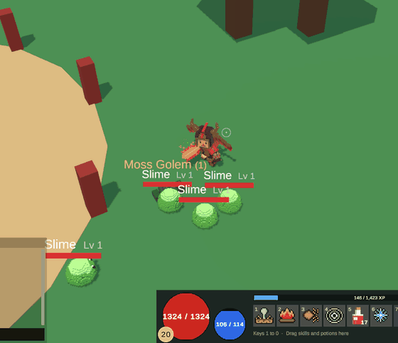
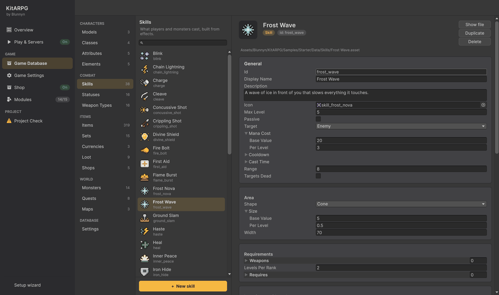
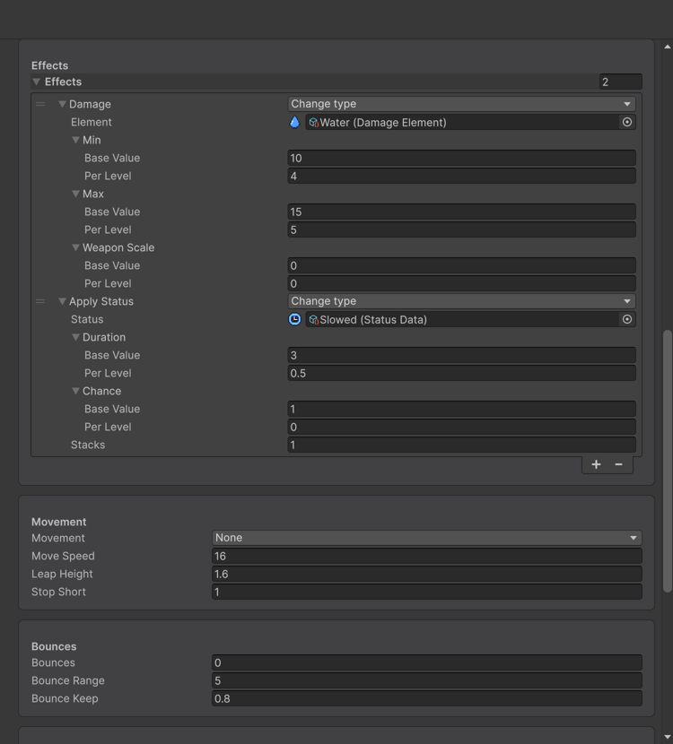
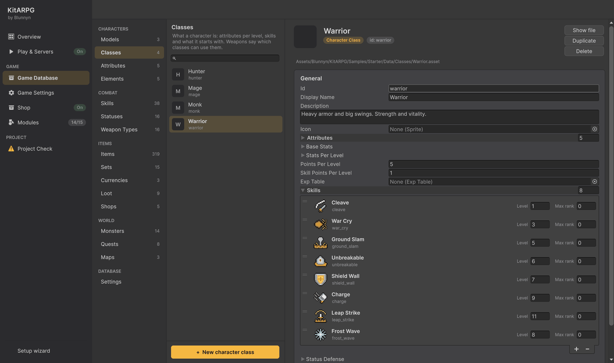

Fazer uma habilidade
Este guia faz Frost Wave: um cone de gelo na frente de quem lança que causa dano de água, deixa lento cada inimigo atingido e fica no chão por dois segundos. Depois a dá ao guerreiro.

1. Faça a habilidade
- No Game Database, abra Combat > Skills e pressione + New skill.
- Em General, defina Id
frost_wave, Display NameFrost Wave, uma Description e um Icon. - Defina o básico:
| Campo | Valor | O que faz |
|---|---|---|
| Max Level | 5 | Ranks que um jogador pode aprender. |
| Target | Enemy | Lançada em um inimigo. |
| Mana Cost | 20, 3 por nível | Cada valor tem uma base e uma mudança por rank. |
| Cooldown | 8, -0,5 por nível | Mais rápida a cada rank. |
| Cast Time | 0.4 | Segundos antes de ela sair. |
| Range | 8 | Metros até o alvo. |

2. A área
Em Area, defina Shape como Cone, Size como 5 (0,5 por nível) e Width como 70 graus. Cada inimigo dentro é atingido. Circle, Line e Single são as outras formas.
Em Zone, defina Zone Time como 2 e Zone Tick como 1: o cone fica onde foi lançado e atinge de novo a cada segundo.
3. O que ela faz
O cartão Effects é a lista do que acontece com cada alvo.
- Pressione + e depois Pick a type > Damage. Defina Element como Water, Min como 10 (4 por nível) e Max como 15 (5 por nível).
- Pressione + de novo e escolha Apply Status. Defina Status como Slowed e Duration como 3 (0,5 por nível).

O cartão Look define as partículas: Cast Effect em quem lança, Area Effect no chão, Hit Effect em cada alvo. Sem Area Effect, a área é desenhada como um contorno plano na cor do elemento. Este guia usa os efeitos Frost Nova do exemplo.
4. Dê a uma classe
- Abra Characters > Classes > Warrior.
- Abra Skills, pressione + e escolha Frost Wave. Defina Level como 8: os guerreiros podem aprendê-la a partir do nível 8.

Para que outras classes a aprendam com um mestre ou um livro, veja Aprender habilidades fora da classe.
5. Teste
- Pressione Play e entre no jogo com um guerreiro. Digite
/level 8se ele tiver nível menor. - Abra a janela Skills (
K), aprenda Frost Wave e arraste-a para a barra rápida. Como GM,/skill frost_wave 1a ensina na hora. - Encontre um grupo de slimes (
/spawn slime 4) e pressione a tecla dela. Com Cast at once desligado em Settings > Controls, o cone aparece primeiro e um clique o lança.
Próximos passos
- Cada forma, efeito e campo: Habilidades.
- Buffs e debuffs: Estados e buffs.
- Uma animação para a habilidade: Character Animations > Skills no modelo de jogador. Veja Modelos de jogador.